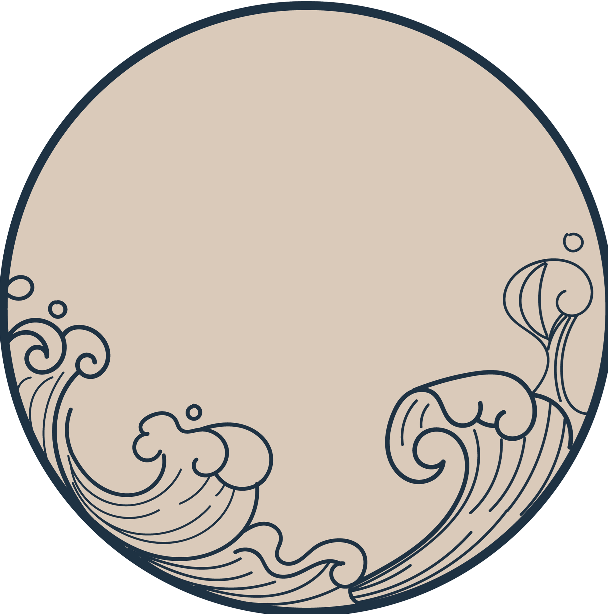
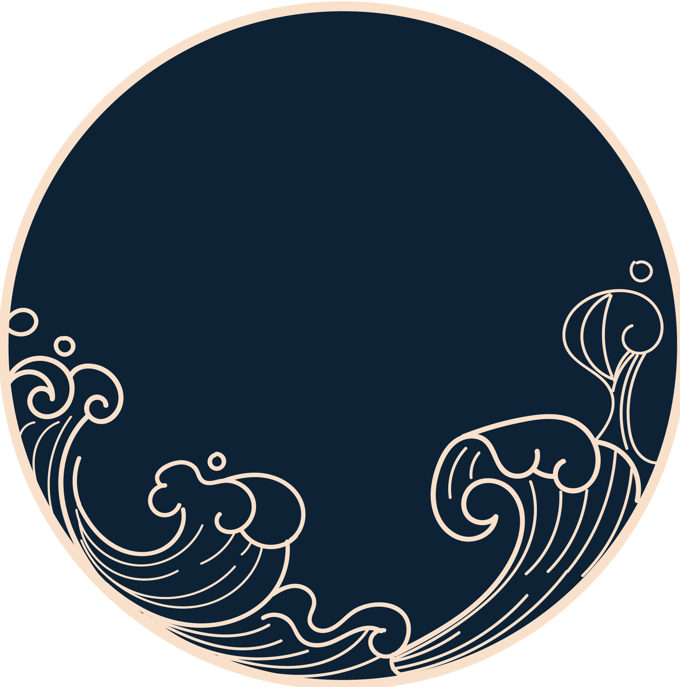
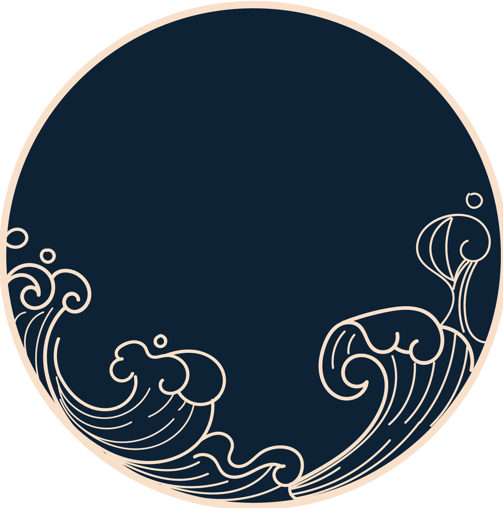

安徽，简称“皖”，省名取当时安庆、徽州两府首字合成，是中华人民共和国省级行政区，省会合肥。
安徽，简称“皖”，省名取当时安庆、徽州两府首字合成，是中华人民共和国省级行政区，省会合肥。安徽位于长江三角洲地区，中国华东地区，东连江苏，西接河南、湖北，东南接浙江，南邻江西，北靠山东。
安徽濒江近海，有八百里的沿江城市群和皖江经济带，内拥长江水道，外承沿海地区经济辐射。地势由平原、丘陵、山地构成；地跨淮河、长江、新安江三大水系。安徽省地处暖温带与亚热带过渡地区。淮河以北属暖温带半湿润季风气候，淮河以南为亚热带湿润季风气候，南北兼容。
乾隆年间，《清会典》从法律层面确定了顺治末、康熙初江南等三省分省的结果，乾隆《清一统志》将江苏与安徽两省分开，目录中已经全部为“以上某某省”。省名取当时安庆、徽州两府首字合成，因境内有皖山、春秋时期有古皖国而简称皖。
安徽省是中华文明的重要发祥地。商代，亳州曾为成汤之都。
抗日战争时，中国共产党领导安徽人民建立了淮北抗日根据地，淮南抗日根据地，皖江抗日根据地。
中华人民共和国成立之初，安徽分为皖北、皖南两行署，皖北行署驻合肥市，皖南行署驻芜湖市。 1952年，合并皖南、皖北行署，恢复安徽省，省会设于合肥市

安徽省是中华文明的重要发祥地。商代，亳州曾为成汤之都。
抗日战争时，中国共产党领导安徽人民建立了淮北抗日根据地，淮南抗日根据地，皖江抗日根据地。
中华人民共和国成立之初，安徽分为皖北、皖南两行署，皖北行署驻合肥市，皖南行署驻芜湖市。 1952年，合并皖南、皖北行署，恢复安徽省，省会设于合肥市

《独坐敬亭山》
众鸟高飞尽，
孤云独去闲。
相看两不厌，
只有敬亭山。
众鸟高飞尽，
孤云独去闲。
相看两不厌，
只有敬亭山。
《白云泉》
天平山上白云泉，
云自无心水自闲。
何必奔冲山下去，
更添波浪向人间。  《翠微峰》
洞里乾坤世莫知，
时闻啸鹤带云归。
几回洞口乘风立，
欲挟飞仙入翠微。 是狼毫淋漓走笔一半，
勾一峰古旧宣纸上藏龙卧虎翻云吐墨的
凛凛青山；
是文扇娇佻横眉一展，
窥一轮谪仙广袖中宝光浸玉欲语还羞的
明明月环。
是桃花挽落千江一梦，
拨一曲黄梅婉调里风鬟雾鬓多情儿女的
眷眷柔肠；
是松石逸荡万方一揽，
醉一斗银钩铁画下芳酩烈酒侠骨剑心的
宕宕豪狂。
天平山上白云泉，
云自无心水自闲。
何必奔冲山下去，
更添波浪向人间。  《翠微峰》
洞里乾坤世莫知，
时闻啸鹤带云归。
几回洞口乘风立，
欲挟飞仙入翠微。 是狼毫淋漓走笔一半，
勾一峰古旧宣纸上藏龙卧虎翻云吐墨的
凛凛青山；
是文扇娇佻横眉一展，
窥一轮谪仙广袖中宝光浸玉欲语还羞的
明明月环。
是桃花挽落千江一梦，
拨一曲黄梅婉调里风鬟雾鬓多情儿女的
眷眷柔肠；
是松石逸荡万方一揽，
醉一斗银钩铁画下芳酩烈酒侠骨剑心的
宕宕豪狂。